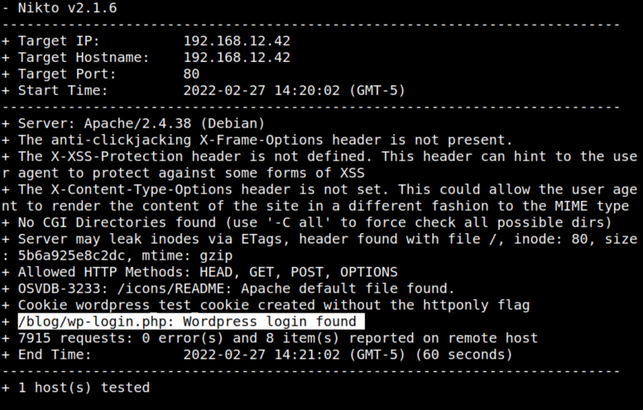
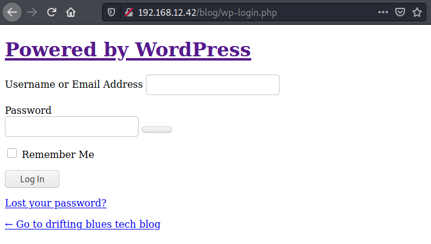
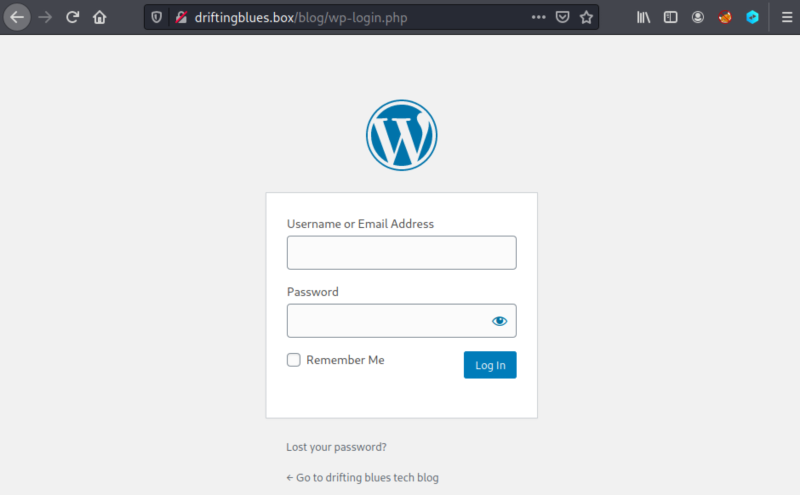

3.1 Scan the website with nikto
1. Run the following code.
$nikto -h http://192.168.12.32
Output:

It seems there's a Wordpress page.
2. Visit http://192.168.12.42/blog/wp-login.php.

You can see the links head to the
driftingblues.box domain.3. Add the domain to your Kali Machine “/etc/hosts/ file the line ”192.168.12.42 driftingblues.box".
$sudo nano /etc/hosts
4. Visit http://driftingblues.box/blog/wp-login.php.\
